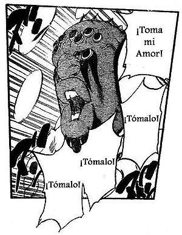

Espada (Bleach)
 De: La Frikipedia, la enciclopedia extremadamente seria.
De: La Frikipedia, la enciclopedia extremadamente seria.
Los Espada son la banda que toca en Las Noches (el prostibulo de Aizen en Huevo Inmundo) y son los mas pajilleros del manga/Anime Bleach.
Origen
Eran Hollows que gracias al preservativo mágico que tenía Rukia creado por Urahara que fue robado por Aizen este los convirtió en arrancares violadolos uno tras otro (Ichimaru Gin y Kaname Tosen también ayudaron). En total son 10, supuestamente son super fuertes, pero actualmente ha todos les dieron macarron y uno que no se sabe si esta vivo o muerto (si Grimmjow esta sobando).
Historia
Los Espadas actuales fueron creados con el Hogkyokyu que Aizen obtuvo sacándolo del alma de Rukia, y que funciona para romper la máscara de los Jollows y así converirlos en arrancar q son hollows sin mascara parecidos a los shinigamis.
Cada Espada posee un número tatuado en algún lugar del cuerpo (espalda, senos, nalgas, lengua , etc.)para indicar su extraordinario poder.
Los arrancars son enumerados segun su poder mientras mas poder mas chico es el numero.
La primera aparición de los Espada es en la intrusión de Yammy y Ulquiorra para matar a Ichigo donde uno es apaleado y el otro tachado de cobarde.
También se aprecian otros cuando Aizen crea Wonder wise usando el Hoygokyu, hasta su reunión en la sala de conferencias para ser informados de la invasión de Ichigo y sus amigos, en la que les dice que no hagan nada porque no son razón de preocupación
Cada Espada puden escoger a cualquier Atrrancar de número 11 o menor (con menor se refiere a menor poder)para ser su Fracción
Se dice que todos los Espada encarnan una razón de muerte la cual los representa.
Características
Aizen planteó una serie de características que debían cumplir los Espada para poder llamarse así:
- Tenerla de mas de un
centímetro
- Hacer cagar a a Halibel
- Ser marginados sociales: emos, nerds, étc.
- Ser gilipollas
- Verse como íconos homosexuales.
- Pecar de anticuados y exhibicionistas.
- Cagarse en tu mamá.
- Resucitar por su cuenta a los tres minutos después de morir.
- Tener grandes atributos cacales.
- Saberse todos los tipos de caca existentes.
- Representar los diez aspectos de la muerte: la Flojera (Stark), la Vejez (Barragan), el Sacrificio Sexual (Harribel), ser Emo (Ulquiorra), la Desesperacion Sexual (Nnoitra), la Destruccion Sexual (Grimmjow), ser Hippie entregando Amor (Zommari), la Fornicacion (Szyael "El Porro"), la Digestion Acumulada (Aaroniero) y el Hacer Mucho la Paja (Yammy).
Poderes
Los espada possen ciertas habilidades impresionantes como:
- Sonido:Es la capacida de moverse a increíbles velocidades.
- Cero: lanzan un rayo desde su mano, boca, etc, que es muy lento pero es tambien muy poderosos.
- Bala: la cual les permite usar un ataque 20 veces más rápido que el cero.
- Acero: la cual hace que su piel sea tan dura que pudean resistir casi cualquier ataque.
Miembros
Como ya dije, son 10 pero cuando estuvo Luppi fueron 11 y actualmente quedan algo asi como 1...(Cuenta un monstruo con cara de cerdo?)y probablemente Grimmjow (probablemente etse en un prostibulo pasandola de lo lindo mientras los demas mueren).
- Yammy: Su primera aparición fue cuando se enfrento contra Inoue y Chad. Apareció Ichigo y atacó cortandole un brazo, luego yammi iva liverar su zampaktou pero uquiorra se lo prohibio. Por ordenes de Ulqui, volvieron al Huevo Inmundo alli le pusieron su brazo ...bueno despues de eso aparece delante de renji, rukia y chad echo un gigante como los del clan akimichi, su plan era ayudar a ulqui-chan pero el prota de ichigo en version "hollow flipante" se lo bajo antes, no el pntalon no, su zero y asi lo mato, pero eso es otra cosa...yami se molesta y se transforma en un hollow inmenso su piel se estira tanto que de su tatuaje de 10 se borra el uno y se convirete en el cero, pero si ahi que ver.
- Stark: El mas flojo de todos, se queda todos los capítulos comiendo, follando, durmiendo y fumando, vamos lo que todos quisieran hacer todos los días. Se cree que Shikamaru es Stark cuando era joven, y una vez muerto se puso una máscara para hacer cosplay y kedo hecho Jollow. Esta actualmente con Halibel y Barragan combatiendo a los capitanes en una guerra a miradas (cuata sangre y acción). Tiene una fracción llamada Lilinette.
- Barragan: Barragan es el viejote del grupo, esta entre los 3 primeros espada. Dicen que fue Issac de Kraken de humano, otros que era el Señor Barriga (del Chavo del 8), hasta algunos claman que el es majin bu cuando toma demasiado sol, pero la verdad era el Rey del Burguer King. Apareció poco y nada en los capítulos pero en los capítulos actuales manga se hace el jefe ya que Aizen esta ocupado
violando mas hollows haciendose la paja. Tiene varias fracciones: Charlotte Cuulhourne (el travesti), Giggio Vega (alias El Topo), Findol Carias, Avirama Redder (alias, El Pajarón), Choe Neng Poww y Nirgge Parduoc
- Halibel: La putilla de la banda (o sea, es con la que todos se consuelan al terminar los shows). Dicen que es lesbiana por tener relaciones cariñosas con Nell y hacer una película porno con ella (solo disponible en Hueco Mundo
te jodes pajillero frikipedista). Tiene como perras fracciones a Moon-Moon Sun-Sun, Apache Tevez y Mari Rose.
- Ulquiorra Schiffer: El emo del grupo, y el 4º Espada. Este tío tiene cierta rivalidad con el 6º Espada, Grimmjow y el prota por intentar tirarse a Inoue (son novios, se conocieron en los capítulos de relleno). Se dice que con Stark participó en Naruto (Stark de Shikamaru y Ulquiorra de Porrochimaru) y que de vida humana podia ser Michael Jackson o "L" de Death Note.
- Noitra Jiruga: También llamado bicho raro, ya que no sabemos exactamente que coño es. Por este hijo de su mismisima madre, vemos a Nell como una cría, y no como una joven pechugona (¡tiradle piedras ya!). Es posible que sea una deidad indú que murió a manos de jesus, pero nadie puede asegurarlo. Este tío se enfrento con Chad, Ichigo, Nell y Kenpachi Zaraki este último lo venció de un puta vez agarrando la espada con las dos manos tirando un rayo superpoderoso. Dicen que su
pene piel es la mas dura de todos los Espada.
- Grimmjow Jeaguerjaques: El chuloputas entre ellos, el 6º Espada y Sasuke en Bleach (Naruto es Ichigo). Su rivalidad con Ichigo es muy parecida a la de Naruto-Sasuke, por lo tanto, a la de Goku-Vegeta, también a la de Light Yagami y L, y de un millon mas. Sueña todo el puto día en tirarse a Halibel viendo su pelicula Porno. El prota, para vencerle, le metió su gran espada larga dentro del cuerpo de Grimmjow.
- Luppi: El/la fue la 6ta espada cuando Grimmjow dejo de serlo, es un/a personaje muy gay aunque seguimos sin saber si es hombre o mujer lo unico que sabemos es que es medio rarito/a(ha quien engaño medio es muy rarito/a)se sabe que tuvo una relacion sexual con Ichimaru Gin y que le mato Grimmjow porque ese dia se habia echo mucho la paja.
 Los espada son unas criaturas muy amorosas
- Zommari Leroux: El negro entre todos, llego a ese puesto matando a todo el mundo acusándolos de racista. Iba a matar a Rukia porque Aaroniero no pudo atravesar a Rukia con su tridente, así que Zommari iba a terminar el trabajo y llegó el pijo de Byakuya para matarlo y evitar tener un cuñado.
- Szyael Aporro Grantz: El gay de los Espada, y como su nombre lo indica, fuma pucho porro (como Porrochimaru). Además de gay, es el cerebro del grupo. Aparece cuando Abarai Renji lo encuentra, y este no podía usar el bankai porque se pone re-loca al ver una repiente gigante y larga en su cuarto. Entra Ishida a ver como Szyael se folla a Renji, los dos hicieron la tecnica te agarro por atras durante 20 segundos. Szyael quedo tan confundido que se comio a una fracción suya y revivio de la nada. Cuando libera su Zanpakuto puede hacer el Gomu Gomu no Fuusen de Monkey D. Luffy (de hecho, dicen que es el tío perdido de Ussop). Mayuri le dio fin a esto y le dio su super-droga para que muriera de una vez.
- Aaroniero Arleri: Una pecera mutante creada por las radiaciones de la planta del Señor Burns (si, los peces que estan dentro son los hermanos de los peces que encontraron Lisa y Bart en el lago Springfield). Se puede comer humanos, Shinigamis, arrancars, hollows si le da la gana (no le gustan los Vizards). Se comió el ex-novio de Rukia, y puede tener la forma de él. Rukia se enfrentó a Aaroniero Arleri pero al verlo como su ex-novio, tuvieron sexo duro durante horas, hasta que le reveló su verdadera forma y quisó matar a Rukia metiendole el tridente(todos sabemos que no era un tridente), pero al final Rukia metió el tridente a la pecera mutante.
Autor(es):
- Frikiman
- Khazike Khashondo
- GonzaloQ
- AlemanH
- Chequego
- Prototype
- Veni Vidi Vici
- Friki lucas
- Mel-o
- Otacross
Frikipedia 2005-2016, Licencia
GFDL 1.2 - Extraído por FrikiLeaks